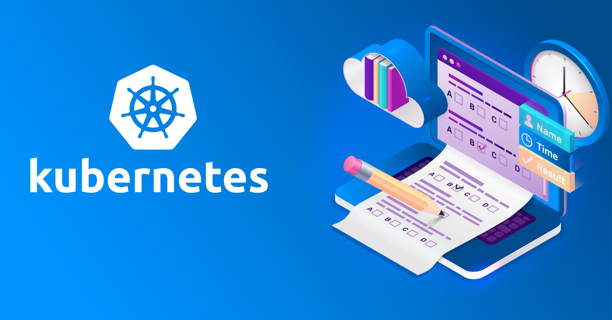

AIOps has already begun to drive digital transformation by improving how IT operations teams communicate with other stakeholders. Applications will become much more sophisticated in the future, necessitating greater automation and cooperation. As a result, successful IT strategies will be inextricably linked to these solutions and approaches.
About
Certified Kubernetes Administrator (CKA)
Google was the first to develop Kubernetes. Cloud Native Compute Foundation (CNCF) is now in charge. It's an open body that provides and administers tests for the official certification of "Kubernetes Certified Administrator." The Kubernetes certification training Courses in Bangalore program's goal is to ensure that CKAs have the necessary skills, knowledge, and competency to perform the duties of Kubernetes administrators. Kubernetes Bangalore is a sophisticated framework for managing containerized applications across several nodes in a cluster. Google created it to manage containerized apps in a clustered environment. Its goal is to give better ways to manage relationships.
Kubernetes is a must-know for any DevOps practitioner. This is now one of the most widely used container orchestration tools. Learn the newest skills required for working with Kubernetes and prepare for the Certified Kubernetes Administrator (CKA) Certification Exam by enrolling in our Kubernetes certification training course. The programme is designed to assist professionals in preparing for the CKA exam.
Objectives
- Kubernetes installation, configuration, and validation
- Kubernetes and application Lifecycle Management
- Kubernetes core operations concepts
- Kubernetes scheduling
- Kubernetes security
- Kubernetes cluster maintenance
- Kubernetes logging and monitoring
- Kubernetes storage
- Kubernetes networking
- Troubleshooting Kubernetes
Prerequisites
Users should have a sound understanding of the Linux command line, as well as networking and service management and a good knowledge of Docker Fundamentals too.
What is Certified Kubernetes Administrator (CKA)?
The Certified Kubernetes Administrator (CKA) curriculum ensures that CKAs have the necessary skills, knowledge, and competency to carry out Kubernetes administrator duties.
A certified Kubernetes administrator has demonstrated fundamental installation skills as well as the ability to configure and manage production-grade Kubernetes clusters.
Why you should learn Certified Kubernetes Administrator (CKA)?
To become a KCSP, an organisation must have at least three CKAs. You improve your organisation and make yourself more useful to your managers by obtaining the CKAD and then the CKA. A good pay, a good chance of securing a job, and preparation for the CKA are all good reasons to get the CKAD.
How DevOpsSchool will help in your Certified Kuberentes administrator Training?
Docker and Kubernetes training and certification in Bangalore is one of the most in-demand jobs in the IT business right now, and IT skills are in high need. In Bangalore, we offer the most amount of best kubernetes certification training. With advanced Kubernetes certified quality training, our Kubernetes Trainer will teach you from the ground up.
Certification is an important step that allows qualified administrators to immediately establish their reputation and value in the job market, as well as allowing enterprises to acquire high-quality teams to support their growth more swiftly.
The certified kubernetes administrator study guide Administrator Certification Kuberentes Administrator Exam is the goal of our curriculum. Our programme will provide you a thorough grasp of Kubernetes, including live examples for each idea. Even if you've never worked with Kubernetes before, you'll be a Kubernetes master by the end of our Certification Kuberentes Administrator Bangalore training programme, and you'll be confident enough to take the CKA exam and pass it effortlessly.
Benefits
What are the benefits of Certified Kubernetes Administrator (CKA)?
The Certified Kubernetes Administrator (CKA) program's goal is to ensure that CKAs have the necessary skills, knowledge, and competency to perform Kubernetes administrator tasks. It's an online, proctored, performance-based test that needs you to use a command line to solve several problems.
- AIOps eliminates noise and distractions, allowing busy IT professionals to focus on what matters most rather than being distracted by unnecessary alerts. This reduces the time it takes to detect and resolve service-impacting issues, as well as the number of interruptions that negatively impact sales and the customer experience.
- AIOps eliminates silos by correlating data from different sources and providing a comprehensive, contextualized view of the complete IT environment – infrastructure, network, applications, and storage – both on-premises and in the cloud.
- AIOps shortens diagnosis and resolution periods for end customers by promoting seamless cross-team communication between diverse professionals and service owners.
- Advanced machine learning collects important data in the background and makes it available in context to better future situation handling.
- The methods for handling reoccurring events can be automated via knowledge recycling and root cause identification, bringing Ops teams closer to a ticketless and self-healing environment.

The AIOps journey is never completely over, just as DevOps is never truly over. Every implementation is different, but they always include gradual development and improvement of the platforms' capabilities. It's critical to remember the progressive nature of AIOps if you want to get the most out of it and make sure you don't stop before your plan reaches its full potential.
Team
Meet Our Mentors & Regents
200+ years of industry experience bringing in core strengths and industry network

Rajesg kumar
DevOps Princial Architect & Co-founder, Cotocus.
Capt. Augustine Joseph
CEO, Jetexe
Shubhanshu Srivastava
Co-Founder at GoScale Technologies
John Mandel
SVP & Executive Board Member, Happiest Minds Technologies.F.A.Q
Frequently Asked Questions
-
What is the purpose of AIOps?
AIOps collects and analyses data to make sophisticated automated judgments. It can forecast likely future events that may impair availability and performance using this data, and even proactively remedy them before they become a problem.
-
What can AIOps do for you?
AIOps, for example, gives IT employees visibility into performance data and dependencies across all environments, analyses the data to extract critical events related to slowdowns or failures, and automatically informs IT personnel to problems, their main causes, and possible fixes.
-
What are some of the benefits of implementing AIOps?
Using AIOps to turn IT operations into a service-oriented paradigm can result in a range of real-world benefits, such as better customer insight, cost reduction, risk reduction, and a more responsive IT organization.
-
What issues does AIOps address?
Improve performance monitoring and service delivery—AIOps estimates resource use and predicts performance issues. Using probable cause analytics, it focuses on the most likely source of an issue. Using clustering and anomaly detection, it aids in identifying the underlying issues that cause events.
-
What role does AIOps play in the future of IT operations?
By putting all forms of data under one roof, AIOps removes data silos in IT. The obtained data is then utilized to run a Machine Learning algorithm to generate insights that enable for quick improvements and adjustments.
-
What do AIOps tools entail?
Artificial intelligence for IT operations (AIOps) tools have recently been a popular issue. These technologies are critical for proper administration as distributed systems get larger, more difficult to administer, and, in general, become more complex with microservices designs.
-
What Are the Most Important Requirements for a Successful Solution?
Teams can use AI-based algorithms to detect potential issues that could compromise service levels, execute automated analysis, and swiftly run effective remediation across a variety of hybrid, multi-cloud systems using AIOps platforms. The key requirements for creating successful capabilities are as follows.
-
How do you get started with AIOps?
Enterprise IT teams have a lot of options when it comes to establishing their implementations, including whether to use commercial products or build their own capabilities utilising open-source technology. There are three important pillars for a successful AIOps deployment, regardless of whatever approach is used:
- Create a cohesive, all-encompassing data lake. It's critical to create a data lake that can absorb and store a diverse assortment of data sources and types. Topological data, alarm metrics, log files, configuration management databases, and more should all be supported by platforms. These various and dissimilar data sets must be standardized and correlated.
- Make use of the appropriate algorithms. There's no need for teams to reinvent the wheel. The truth is that the algorithms required have been around for a while. Knowing which algorithm to apply at what time is crucial.
- Make sure you ask the proper questions. Having the correct questions in mind throughout the process is crucial, as is ensuring that the platform provides the intelligence required to answer the queries that matter. What's the best blend of on-premises and cloud resources? What kind of workloads should be transferred to the cloud? How are problems recognized and avoided before they cause a disruption for users? Effective implementations can provide valuable insights into these and other areas.

Kshitiij Gupta
Ceo & Founder
Proin iaculis purus consequat sem cure digni ssim donec porttitora entum suscipit rhoncus. Accusantium quam, ultricies eget id, aliquam eget nibh et. Maecen aliquam, risus at semper.

Abhinav Gupta, Pune
Designer
The training was very useful and interactive. Rajesh helped develop the confidence of all.

Indrayani, India
Store Owner
Rajesh is very good trainer. Rajesh was able to resolve our queries and question effectively. We really liked the hands-on examples covered during this training program.

Ravi Daur , Noida
Freelancer
Good training session about basic Devops concepts. Working session were also good, howeverproper query resolution was sometimes missed, maybe due to time constraint.

Sumit Kulkarni
Software Engineer
Very well organized training, helped a lot to understand the DevOps concept and detailed related to various tools.Very helpful.

Vinaya
Software Engineer
Thanks Rajesh, Training was good, Appreciate the knowledge you poses and displayed in the training.